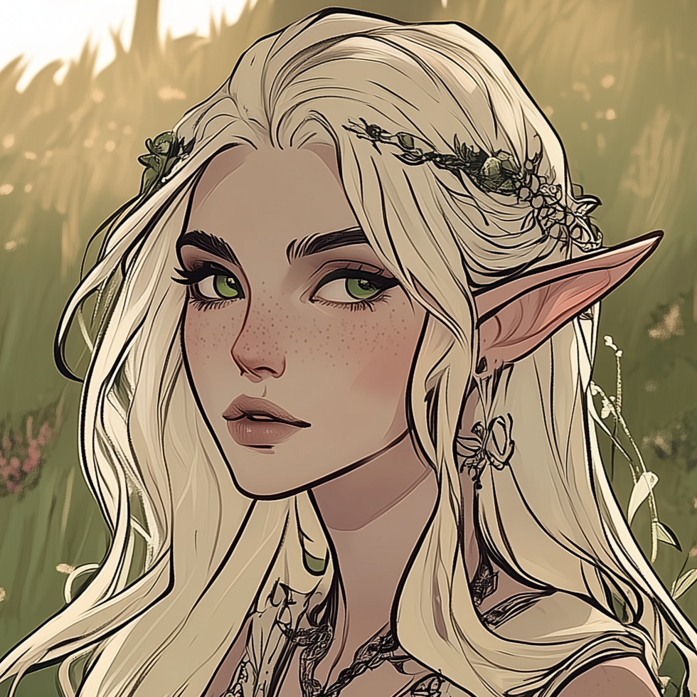

| VELARIS |
|

|
| Race: |
High Elf |
| Age: |
37 |
| Height: |
1'56 |
| Faction: |
Free Kingdoms |
| Ocupation: |
Princess of Naos, Druid in training |
| Significant Other: |
Murtagh, the Deathsworn |
| Connections: |
Naos |
Princess Velaris
The youngest of five siblings, the princess of Naos has lived a pretty sheltered life behind the castle walls. With four older siblings to take care of her, duties and responsibilities tended not to fall on her shoulders. This provided her with the freedom to pursue her own interests. This is how she discovered her skills in manipulating plants.
It was only as she entered adulthood that Velaris was truly made aware of the responsibility that would follow her, that was a princess she would most likely married to a noble, either at home or someone from a neighbouring kingdom. Despite her understanding facade, the Princess dreamed of getting away from it all, disappearing in the forest and making a life for herself. She would often sneak out, finding her way into her favourite clearing to grow flowers and talk to the animals. She dreams of something more, adventure and action, not a life tied to a man she barely knows.